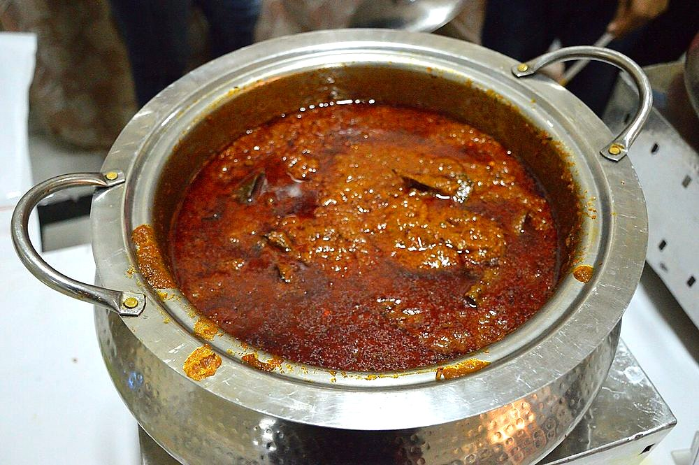

Safed Maas
pale, creamy mutton braised with cashew, yogurt and white pepper instead of red chilli

Contains: dairy, nuts
Ingredients
Quantities for 4.
- 800g, on the bone, cut into 4cm pieces Mutton
- 20, soaked in hot water 20 minutes Cashew
- 15, blanched and skinned Almondsthe skins would speckle the white gravy
- 1 tbsp, soaked Poppy Seeds
- 1 tbsp, soaked Melon Seedsoptional
- 250g, whisked smooth Yogurt
- 60ml Cream
- 5 tbsp Ghee
- 2 medium, boiled 10 minutes and ground Onionboiled, never browned — brown onion would colour the gravy
- 1 tbsp, paste Garlic
- 1 tbsp, paste Ginger
- 1.5 tsp, freshly ground White Pepperthe heat of this dish
- 3, slit Green Chilli
- 5 Cardamom
- 4 Cloves
- 1 piece, 3cm Cinnamon
- 1/4 tsp Maceoptional
- 1/2 tsp Kewra Wateroptional
- 500ml Water
- to taste Salt
Equipment
stovetop, blender, pressure cooker
Before you start
- Soak the cashew, almonds, poppy and melon seeds together in hot water for 20 minutes, then blend to a completely smooth paste with 100ml water. Any grit shows in the finished gravy.
- Boil and grind the onion in advance and let it cool — hot onion paste added to yogurt encourages splitting.
- Bring the yogurt to room temperature and whisk it until pourable before you start.
Method
- Heat the ghee on medium and fry the cardamom, cloves, cinnamon and mace 30 seconds, without letting them colour.Any browning at this stage tints the gravy; keep the flame moderate.
- Add the ginger and garlic pastes and cook 2 minutes until the raw edge goes but no colour develops.
- Stir in the boiled onion paste and cook 5 minutes on low, stirring, until it thickens and smells sweet.
- Add the mutton and turn it in the paste 6 minutes over medium heat — sealing, not browning.
- Take the pan off the heat, stir in the whisked yogurt, then return to the lowest flame and cook 8 minutes until it thickens and the ghee edges out.Off the heat first, always. This is where safed maas is usually lost.
- Add the nut paste, white pepper, green chillies, salt and water. Pressure-cook 5 whistles, or cover and simmer 60 minutes until the meat is tender.
- Uncover and simmer 8 minutes to reduce until the gravy coats the back of a spoon.
- Stir in the cream and kewra water, warm through 2 minutes without boiling, and rest 10 minutes before serving.Boiling after the cream goes in makes the gravy grainy.
Storage
Keeps 2 days refrigerated. Reheat over low heat only, stirring, with a splash of milk to bring the gravy back together. Do not freeze — the nut and cream gravy turns grainy.
Nutrition Medium estimate
| Per serving402 g | Per 100 g | |
|---|---|---|
| Calories | 556+ kcal | 138+ kcal |
| Protein | 48.0+ g | 11.9+ g |
| Carbohydrate | 17.1+ g | 4.2+ g |
| of which sugars | 7.8+ g | 1.9+ g |
| Fibre | 3.1+ g | 0.8+ g |
| Fat | 33.2+ g | 8.2+ g |
| of which saturated | 16.8+ g | 4.2+ g |
| of which unsaturated | 13.9+ g | 3.5+ g |
The + means ingredients given to taste rather than by weight are counted as zero, so the true figure is a little higher than shown. Worked out from the listed quantities. Some of the ingredient list is given to taste rather than by weight, so treat these as a guide. Ingredients given to taste rather than by weight are counted as zero, so the real figure is a little higher than this. The + says so. Some ingredients have no exact match in the nutrient database and use the nearest equivalent: mutton. Estimated from raw ingredients using USDA FoodData Central. Cooking changes are not modelled, and added salt is excluded, so sodium is not given.
Recipe v1.0.0, last updated 2026-07-31. Curated for Khaana and kept under version control.